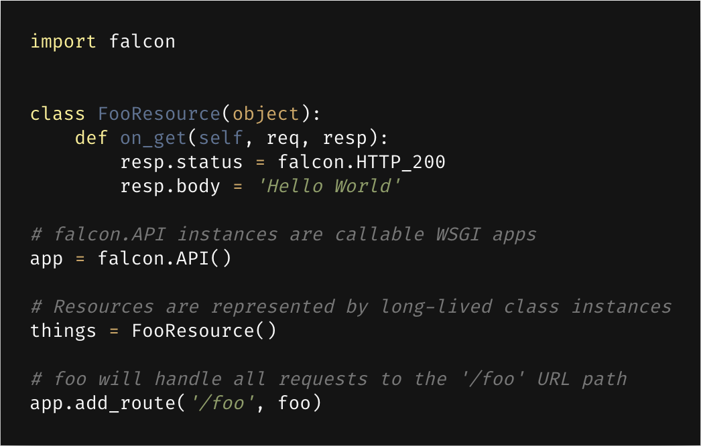
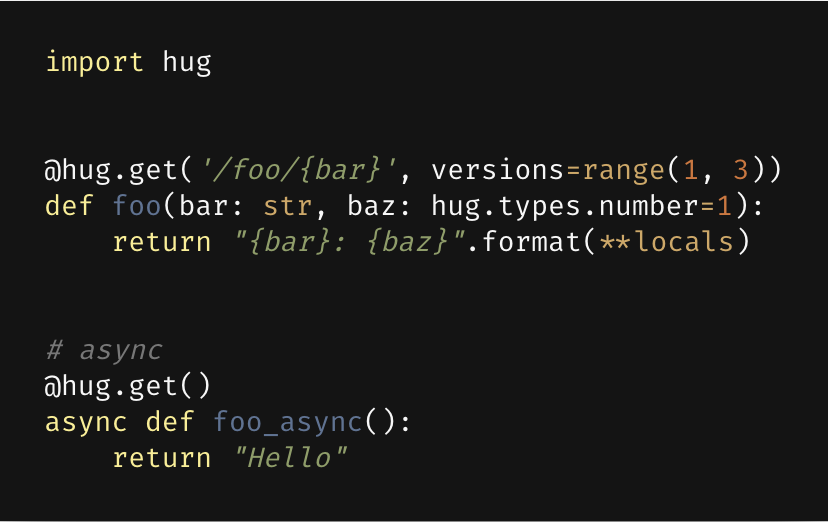
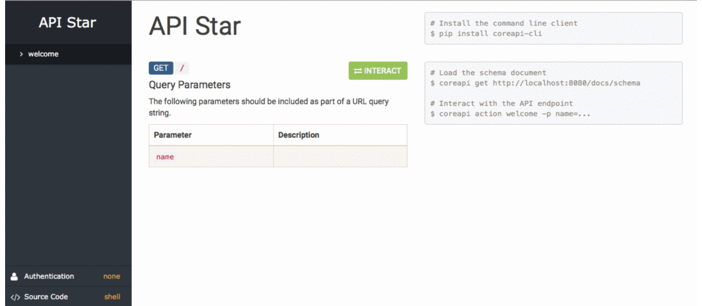
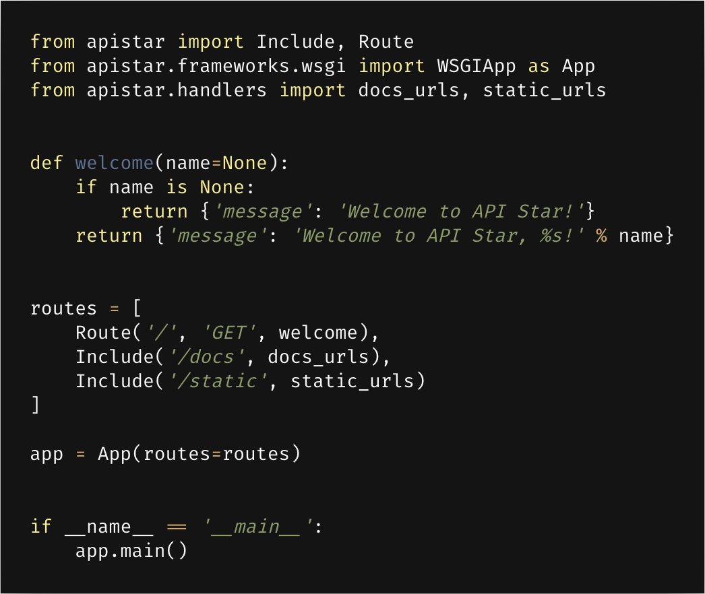
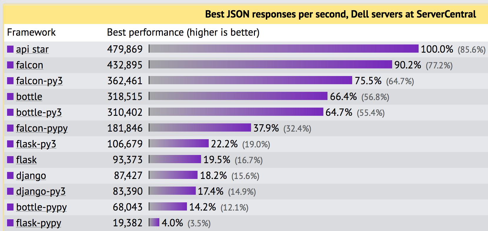

Python Web Frameworks in the Age of Microservices
Old Faithful
Photo by Emily Campbell on Unsplash


Road Less Traveled
Photo by Gabriel Garcia Marengo on Unsplash


- bare-metal Python web API framework for building high-performance microservices, app backends, and higher-level frameworks
- py2.6 / py3.6 / pypy2 / pypy3
- Rackspace, OpenStack, Opera Software, Linkedin, Wargaming


- Hopefully Useful Guide
- json style auto docs
- version management
- Annotation powered validation
- Falcon ❤ Hug
- ~ docs

 TODO description
TODO code example
TODO description
TODO code example
🌟
- wsgi or async
- json schema generation
- typesystem for validation
- ~ templating
- ~ authentication
- testing using py.test



`{"message":"Hello, World!"}`
Roundup
Photo by Erlend Ekseth on Unsplash
|
stable |
docs |
speed |
async* |
py2 |
mascot |
| Django |
👌 |
👌 |
👎 |
👎 |
⛔ ** |
😊 |
| Flask |
👍 |
👍 |
🤞 |
👎 |
✅ |
😑 |
| Bottle |
👍 |
👍 |
👍 |
👎 |
✅ |
😑 |
| Falcon |
👍 |
👍 |
👌 |
👎 |
✅ |
😲 |
| Hug |
🤞 |
👎 |
👌 |
👍 |
⛔ |
😍 |
| Sanic |
👎 |
👍 |
👍 |
👍 |
⛔ |
derp |
| Apistar |
🖕 |
👍 |
👍 |
👍 |
⛔ |
🤔 |
* out of the box
** not since 2.0 👏
Join @ Discord: Python Balkan